Parque Tecnológico
Territórios de Minas
Aproveita a infraestrutura e as competências já existentes nos diversos campi do IFMG para democratizar o acesso à inovação em Minas Gerais por meio da implantação das Unidades Tecnológicas nos territórios.
Uma Visão
"Ser referência como instituição de educação profissional, científica e tecnológica, inovadora, sustentável, socialmente inclusiva e articulada com as demandas da sociedade."

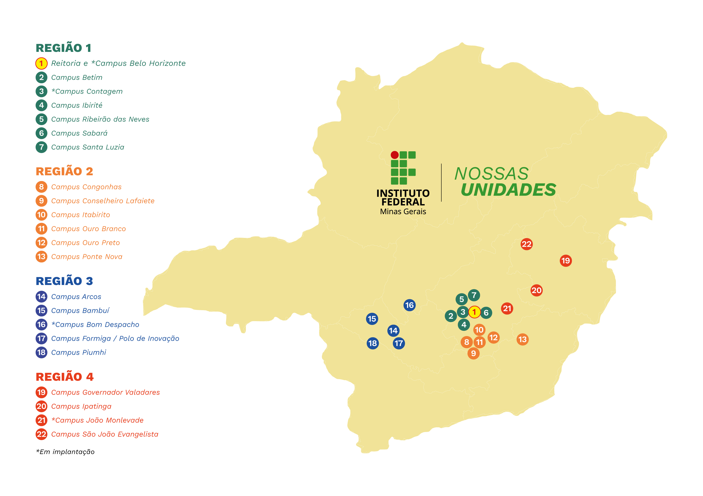
Impacto da
Interiorização
Economia Local
Talentos Retidos
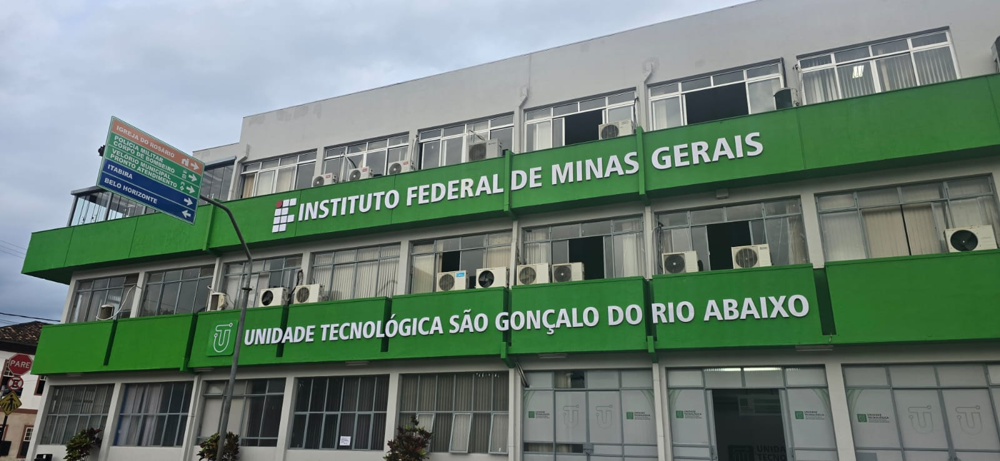

Objetivos Estratégicos do Parque Tecnológico
Fomentar a Inovação
Qualificação Profissional
Apoiar Startups
Academia–Indústria
Estrutura
Organizacional
-
Reitoria
-
PRIPPG Pró-reitoria de Inovação,
Pesquisa e Pós-graduação-
-
Unidades
Tecnológicas
-
-
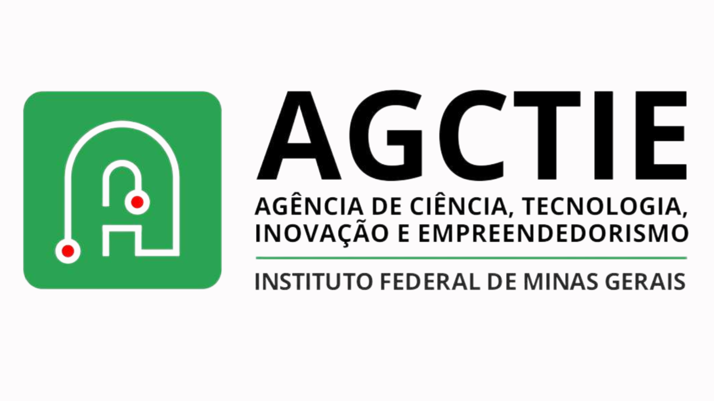
NIT / Agência de Inovação-
Centros de
Excelência

-
Núcleo de
PI e TT -
Prospecção e
Parcerias -
Empreende-
dorismo -
Convênios e
Contratos
-
-
-
 Polo de Inovação
Polo de Inovação
-
Parceiros do Parque Tecnológico
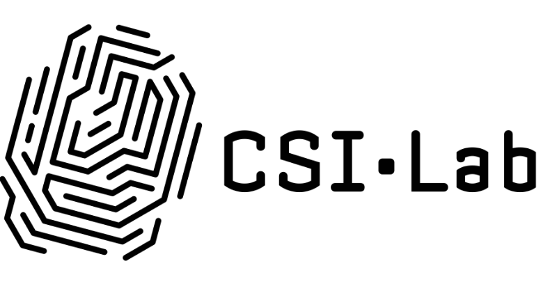

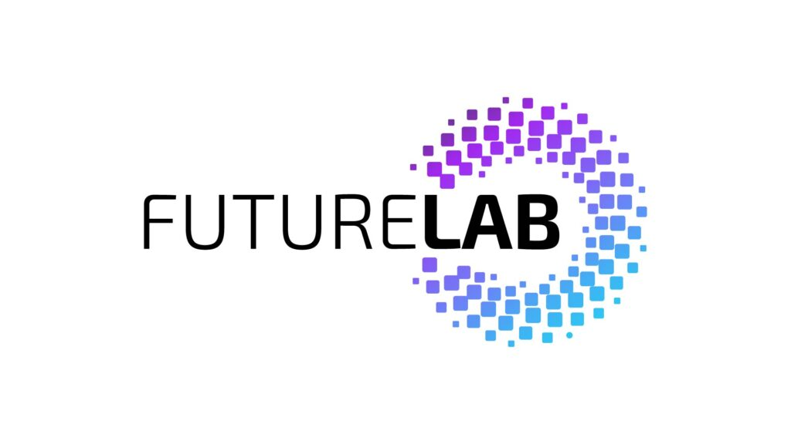
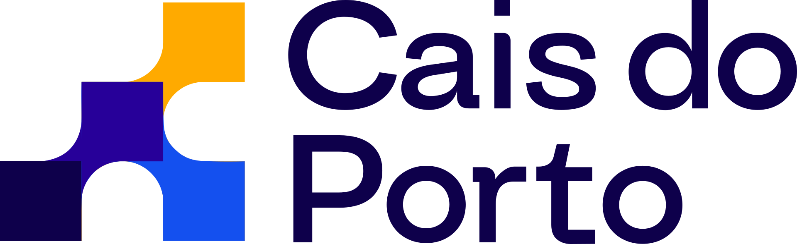
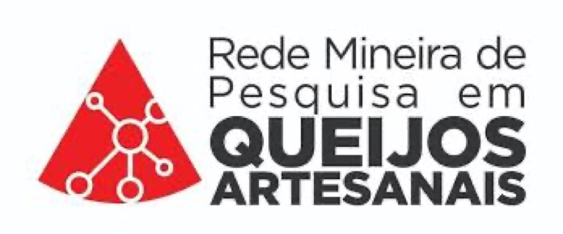
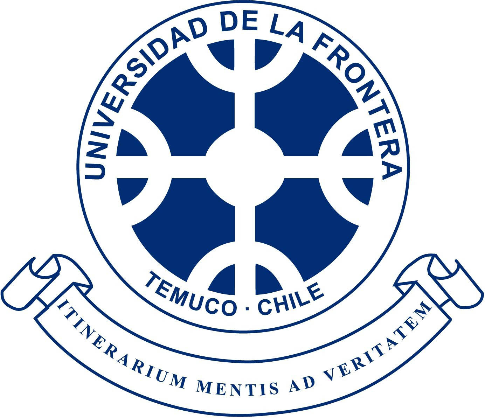
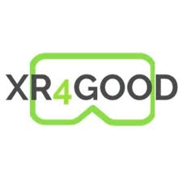
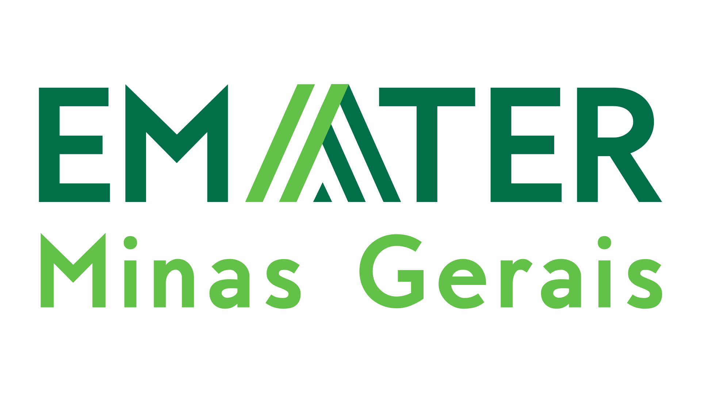

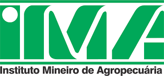
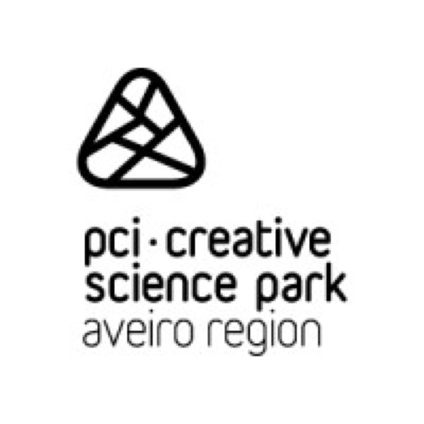